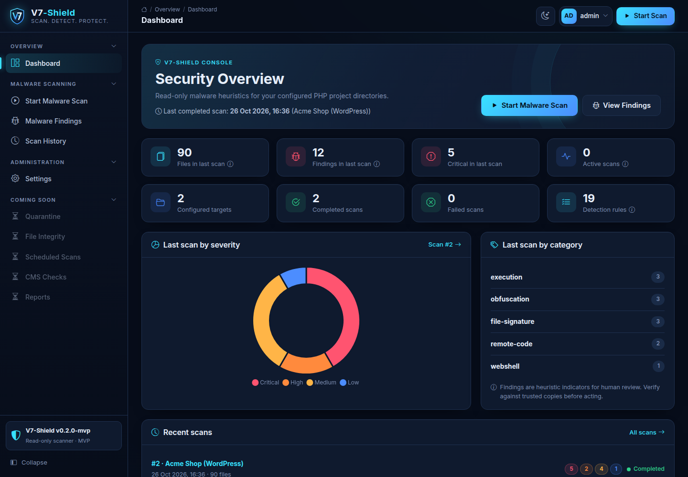

Find webshells and hidden malware on your PHP sites
V7-Shield is a free, open-source, read-only malware scanner for WordPress, Joomla and custom PHP projects. It runs on your own server and never touches your files.
View on GitHub Install in 1 minute
What it checks
Webshells and backdoors
Request data reaching eval, shell commands, include or file writes, plus known webshell markers.
Obfuscated code
Decode-and-execute chains, long base64 blobs, hex-escaped strings and chr() assembly.
Disguised files
PHP hidden inside images or text files, extension/content mismatches and stray executables in upload folders.
Safe by design
Read-only scanning. It never follows symlinks, limits size, depth and time, and only scans directories you configure.
Clear results
Every finding has a severity, a confidence score, a short evidence excerpt, a SHA-256 hash and its known false positives.
No dependencies
Core PHP 8.1+, MySQL and vanilla JavaScript. No Composer, no npm and no build step.
Install
You need PHP 8.1 or newer with pdo_mysql, and MySQL 8 or MariaDB 10.6+.
git clone https://github.com/TheVaibhaw/V7-Shield.git cd V7-Shield php start.php
Open http://127.0.0.1:8000/, sign in, and point it at the folder you want to check. The README covers server deployment and configuration.
V7-Shield reports suspicious indicators, not confirmed malware. Its rules are heuristics that can miss threats and flag legitimate code, so review every finding before you act.
FAQ
Can it scan a WordPress site for malware?
Yes. Add the site's directory as a scan target. It flags webshells in wp-content/uploads, obfuscated plugin code, PHP disguised as images and similar indicators.
Does it delete or clean infected files?
No. It's strictly read-only, so you decide what to do with each finding. Quarantine with human approval is on the roadmap.
Is it free?
Yes. It's MIT-licensed, and you can use it commercially.
How is it different from a WordPress security plugin?
It runs separately from the site it scans instead of as a plugin inside it, and it works the same way for WordPress, Joomla and plain PHP projects.
How can I help?
New detection rules and false-positive reports are the most useful contributions. See the good first issues and the contributing guide.